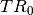
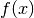
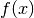

Preliminary¶
This is just a short summary of the terms employed in this manual. If you are not familiar with finite elements, this should be useful (but in any case, you should definitively read the Description of the Project).
The mesh is composed of convexes. What we call convexes can be
simple line segments, prisms, tetrahedrons, curved triangles, of even something
which is not convex (in the geometrical sense). They all have an associated
reference convex: for segments, this will be the ![[0,1]](../_images/math/e861e10e1c19918756b9c8b7717684593c63aeb8.png) segment,
for triangles this will be the canonical triangle , etc.
All convexes of the mesh are constructed from the reference convex through a
geometric transformation. In simple cases (when the convexes are
simplices for example), this transformation will be linear (hence it is easily
inverted, which can be a great advantage). In order to define the geometric
transformation, one defines geometrical nodes on the reference convex.
The geometrical transformation maps these nodes to the mesh nodes.
segment,
for triangles this will be the canonical triangle , etc.
All convexes of the mesh are constructed from the reference convex through a
geometric transformation. In simple cases (when the convexes are
simplices for example), this transformation will be linear (hence it is easily
inverted, which can be a great advantage). In order to define the geometric
transformation, one defines geometrical nodes on the reference convex.
The geometrical transformation maps these nodes to the mesh nodes.
On the mesh, one defines a set of basis functions: the FEM. A FEM is
associated at each convex. The basis functions are also attached to some
geometrical points (which can be arbitrarily chosen). These points are similar to
the mesh nodes, but they don’t have to be the same (this only happens on very
simple cases, such as a classical  fem on a triangular mesh). The set
of all basis functions on the mesh forms the basis of a vector space, on which the
PDE will be solved. These basis functions (and their associated geometrical point)
are the degrees of freedom (contracted to dof). The FEM is
said to be Lagrangian when each of its basis functions is equal to one
at its attached geometrical point, and is null at the geometrical points of others
basis functions. This is an important property as it is very easy to
interpolate an arbitrary function on the finite elements space.
fem on a triangular mesh). The set
of all basis functions on the mesh forms the basis of a vector space, on which the
PDE will be solved. These basis functions (and their associated geometrical point)
are the degrees of freedom (contracted to dof). The FEM is
said to be Lagrangian when each of its basis functions is equal to one
at its attached geometrical point, and is null at the geometrical points of others
basis functions. This is an important property as it is very easy to
interpolate an arbitrary function on the finite elements space.
The finite elements method involves evaluation of integrals of these basis functions (or product of basis functions etc.) on convexes (and faces of convexes). In simple cases (polynomial basis functions and linear geometrical transformation), one can evaluate analytically these integrals. In other cases, one has to approximate it using quadrature formulas. Hence, at each convex is attached an integration method along with the FEM. If you have to use an approximate integration method, always choose carefully its order (i.e. highest degree of the polynomials who are exactly integrated with the method): the degree of the FEM, of the polynomial degree of the geometrical transformation, and the nature of the elementary matrix have to be taken into account. If you are unsure about the appropriate degree, always prefer a high order integration method (which will slow down the assembly) to a low order one which will produce a useless linear-system.
The process of construction of a global linear system from integrals of basis functions on each convex is the assembly.
A mesh, with a set of FEM attached to its convexes is called a mesh_fem object in GetFEM++.
A mesh, with a set of integration methods attached to its convexes is called a mesh_im object in GetFEM++.
A mesh_fem can be used to approximate scalar fields (heat, pression, ...), or vector fields (displacement, electric field, ...). A mesh_im will be used to perform numerical integrations on these fields. Most of the finite elements implemented in GetFEM++ are scalar (however,  and edges elements are also available). Of course, these scalar FEMs can be used to approximate each component of a vector field. This is done by setting the of the mesh_fem to the dimension of the vector field (i.e. scalar field, 2D vector field etc.).
When solving a PDE, one often has to use more than one FEM. The most important one will be of course the one on which is defined the solution of the PDE. But most PDEs involve various coefficients, for example:
Hence one has to define a FEM for the main unknown  , but also for the
data and  if they are not constant. In order to
interpolate easily these coefficients in their finite element space, one often
choose a Lagrangian FEM.
, but also for the
data and  if they are not constant. In order to
interpolate easily these coefficients in their finite element space, one often
choose a Lagrangian FEM.
The convexes, mesh nodes, and dof are all numbered. We sometimes refer to the number associated to a convex as its convex id (contracted to cvid). Mesh node numbers are also called point id (contracted to pid). Faces of convexes do not have a global numbering, but only a local number in each convex. Hence functions which need or return a list of faces will always use a two-rows matrix, the first one containing convex ids, and the second one containing local face number.
While the dof are always numbered consecutively, this is not always the case for point ids and convex ids, especially if you have removed points or convexes from the mesh. To ensure that they form a continuous sequence (starting from 1), you have to call:
>>> m.set('optimize structure')

前のトピックへ
次のトピックへ
Download
Main documentations
- GetFEM++ User documentation
- Python Interface
- Matlab Interface
- Scilab Interface
- Gmm++
- GetFEM++ project